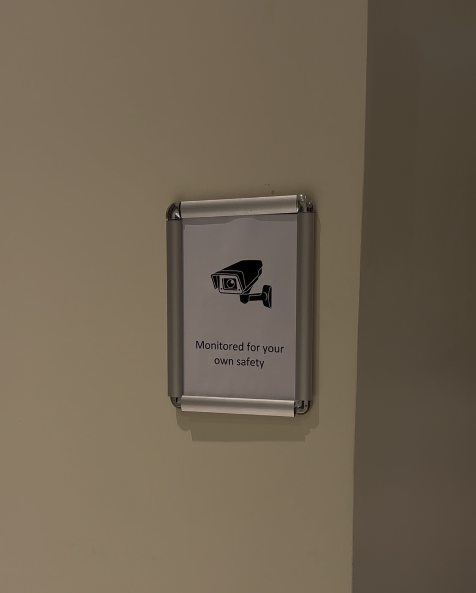
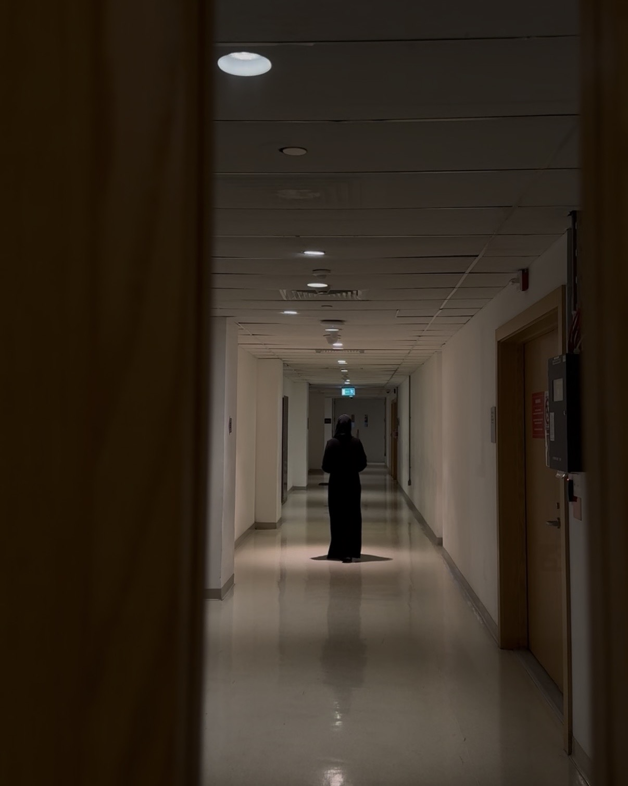

I think we got the mystery and thriller feeling we wanted, but I think the story could have been clearer. If we had more time, I would have added more people and more movement, like more running or strange actions. I also think having more locations would have made the film more interesting.
Directed by Aljazei and Moza.
Filmed, edited, and created by Aljazei and Moza.